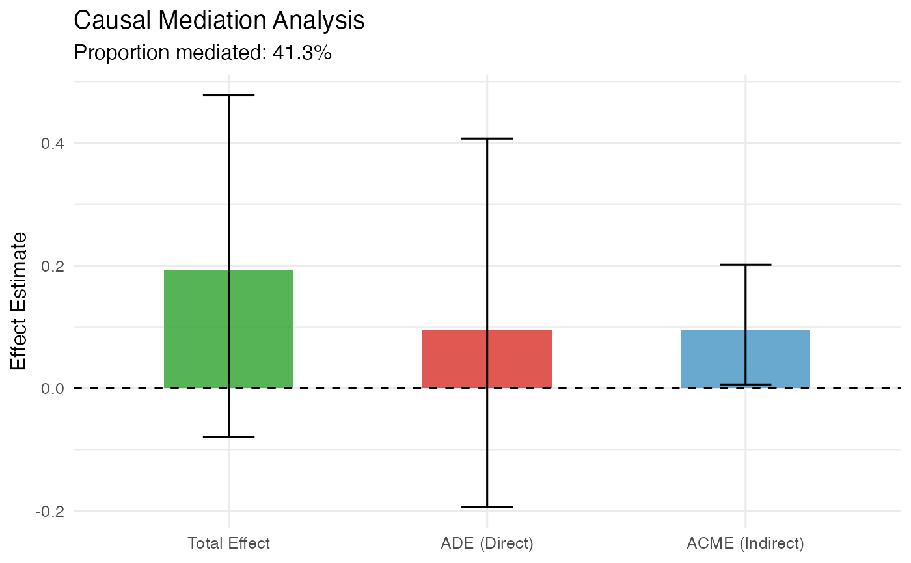

mediation_analysis.RdPerforms causal mediation analysis to decompose the total treatment effect into the Average Causal Mediation Effect (ACME / indirect effect) and the Average Direct Effect (ADE). Wraps mediation package functionality with enhanced output and visualization.
mediation_analysis(
data,
outcome,
treatment,
mediator,
covariates = NULL,
treat_mediator_interaction = FALSE,
family_mediator = "gaussian",
family_outcome = "gaussian",
sims = 1000,
conf_level = 0.95,
seed = 42,
plot = TRUE
)A data frame.
Character. Name of the outcome variable.
Character. Name of the binary treatment variable.
Character. Name of the mediator variable.
Character vector. Additional covariates in both models.
Default NULL.
Logical. Whether to include a
treatment × mediator interaction in the outcome model. Default
FALSE.
Character. GLM family for the mediator model.
Default "gaussian". Use "binomial" for binary mediators.
Character. GLM family for the outcome model.
Default "gaussian".
Integer. Number of quasi-Bayesian Monte Carlo simulations.
Default 1000.
Numeric. Confidence level for CIs. Default 0.95.
Integer. Random seed. Default 42.
Logical. If TRUE (default), produce a decomposition plot.
A list with:
Numeric. Average Causal Mediation Effect (indirect effect).
Numeric. Average Direct Effect.
Numeric. Total treatment effect.
Numeric. Proportion of effect mediated.
Data frame with ACME, ADE, Total, and their CIs.
The mediate object (if mediation is available).
ggplot2 decomposition bar chart.
This function implements the approach from Imai et al. (2010) via the mediation package. When mediation is not available, a simple product-of-coefficients (Baron-Kenny) approach is used.
The sequential ignorability assumption (no unmeasured confounding of
mediator-outcome relationship) is required for causal interpretation.
Use sensitivity_plot() or the sens.analysis output from
the mediation package to assess robustness.
Imai, K., Keele, L., & Tingley, D. (2010). A general approach to causal mediation analysis. Psychological Methods, 15(4), 309–334.
Baron, R. M., & Kenny, D. A. (1986). The moderator-mediator variable distinction in social psychological research. Journal of Personality and Social Psychology, 51(6), 1173–1182.
set.seed(123)
n <- 200
df <- data.frame(
treat = rbinom(n, 1, 0.5),
X = rnorm(n)
)
df$mediator <- 0.5 * df$treat + 0.3 * df$X + rnorm(n, 0, 0.5)
df$outcome <- 0.3 * df$mediator + 0.2 * df$treat + rnorm(n)
result <- mediation_analysis(
data = df,
outcome = "outcome",
treatment = "treat",
mediator = "mediator"
)
#> Registered S3 method overwritten by 'lme4':
#> method from
#> na.action.merMod car
result$summary_df
#> effect estimate ci_lower ci_upper
#> 1 ACME (Indirect) 0.09632680 0.006451494 0.2015267
#> 2 ADE (Direct) 0.09566813 -0.193571221 0.4071730
#> 3 Total Effect 0.19199493 -0.078644711 0.4779045
result$plot
